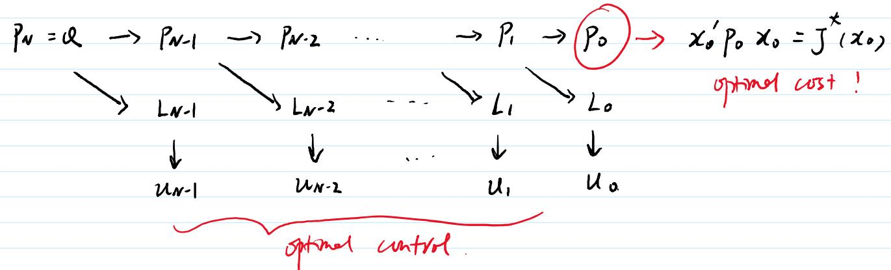
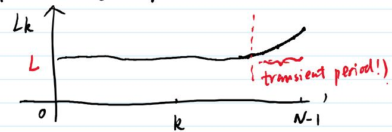

研讨会系列 · KF L20 · 线性二次型调节器 · 第一部分
LQR 问题与 DP 求解
线性二次型调节器（LQR）问题建模、DP 方法逆向推导、Riccati 方程与最优增益
📅 2026-07-22
🧩 LQR
🏆 Riccati 方程
🔄 最优控制
🎯 学完本节，你应能
写出 LQR 问题的系统模型与代价函数
用 DP 方法从终值反向推导 LQR 最优控制律
推导离散时间 Riccati 方程
理解 Completion of Squares（配方法）在 LQR 求解中的角色
🔑 核心思想
LQR 是 DP 方法在二次型代价+线性系统下的闭式解。由于代价是二次型，Bellman 方程退化为一个矩阵递推——Riccati 方程——无需穷举就能直接求出最优控制律。这是"求解 DP 问题"的黄金标准样例。
1. LQR 问题描述
线性二次型调节器（Linear Quadratic Regulator, LQR）是控制理论中最经典的问题之一，也是 DP 方法能够给出简洁闭式解的一个重要实例。
1.1 系统模型
1.2 代价函数
$$ J = \underbrace{x_N^\top Q x_N}_{g_N} + \sum_{k=0}^{N-1} \big( x_k^\top Q x_k + u_k^\top R u_k \big) $$
$Q \geq 0$：状态权矩阵（半正定）
$R > 0$：控制权矩阵（正定）
$x_N^\top Q x_N$：终值代价（terminal cost）
1.3 目标
找到最优控制序列 $\{u_0^*, u_1^*, \dots, u_{N-1}^*\}$，使得总代价 $J$ 最小化。
2. DP 求解 LQR：逆向递推
代价函数是二次型、系统是线性的，因此 Bellman 方程每一步都可以得到一个闭式解。
2.1 终值条件
$$ J_N(x_N) = g_N(x_N) = x_N^\top Q x_N = x_N^\top P_N x_N, \quad P_N = Q $$
2.2 逆向一步：$k = N-1$
$$ \begin{aligned}
J_{N-1}(x_{N-1}) &= \min_{u_{N-1}} \Big\{ x_{N-1}^\top Q x_{N-1} + u_{N-1}^\top R u_{N-1} + J_N(x_N) \Big\} \\
&= \min_{u_{N-1}} \Big\{ x_{N-1}^\top Q x_{N-1} + u_{N-1}^\top R u_{N-1} + x_N^\top Q x_N \Big\}
\end{aligned} $$
代入 $x_N = A x_{N-1} + B u_{N-1}$：
$$ J_{N-1}(x_{N-1}) = \min_{u_{N-1}} \Big\{ x_{N-1}^\top Q x_{N-1} + u_{N-1}^\top R u_{N-1} + (A x_{N-1} + B u_{N-1})^\top Q (A x_{N-1} + B u_{N-1}) \Big\} $$

从 $k=N$ 到 $k=0$ 的逆向递推过程
3. 配方法与最优控制律
3.1 展开整理
$$ \begin{aligned}
J_{N-1}(x_{N-1}) &= \min_{u_{N-1}} \Big\{ x_{N-1}^\top Q x_{N-1} + u_{N-1}^\top R u_{N-1} \\
&\quad + x_{N-1}^\top A^\top Q A x_{N-1} + 2 x_{N-1}^\top A^\top Q B u_{N-1} + u_{N-1}^\top B^\top Q B u_{N-1} \Big\} \\
&= \min_{u_{N-1}} \Big\{ u_{N-1}^\top (R + B^\top Q B) u_{N-1} + 2 x_{N-1}^\top A^\top Q B \cdot u_{N-1} + \text{const}(x_{N-1}) \Big\}
\end{aligned} $$
3.2 Completion of Squares
对于 $u^\top M u + 2 v^\top u$ 型二次型，最小值通过配方法求得：
$$ \begin{aligned}
&u^\top M u + 2 v^\top u = (u - \Delta)^\top M (u - \Delta) - \Delta^\top M \Delta \\
&\text{其中 } \Delta = -M^{-1} v, \quad M = R + B^\top Q B
\end{aligned} $$
代入 $v = B^\top Q A x_{N-1}$，得到：
🏆 $k = N-1$ 最优控制律
$$ u_{N-1}^* = - (R + B^\top P_N B)^{-1} B^\top P_N A \cdot x_{N-1} $$
这是状态线性反馈 ：$u_{N-1}^* = -L_{N-1} x_{N-1}$
3.3 代价函数的值
代回最优控制律：
$$ J_{N-1}(x_{N-1}) = x_{N-1}^\top P_{N-1} x_{N-1} $$
$$ P_{N-1} = A^\top P_N A + Q - A^\top P_N B (B^\top P_N B + R)^{-1} B^\top P_N A, \quad P_N = Q $$
4. Riccati 方程推导
4.1 一般形式
假设 $J_{k+1}(x_{k+1}) = x_{k+1}^\top P_{k+1} x_{k+1}$，则在时刻 $k$：
$$ J_k(x_k) = \min_{u_k} \Big\{ x_k^\top Q x_k + u_k^\top R u_k + (A x_k + B u_k)^\top P_{k+1} (A x_k + B u_k) \Big\} $$
4.2 离散时间 Riccati 方程
4.3 最优增益矩阵

Riccati 方程逆向递推：从 $P_N$ 到 $P_0$
5. 完整求解流程与数值例子
5.1 离线计算流程
📋 LQR 求解步骤
初始化 ：$P_N = Q$对 $k = N-1, \dots, 0$ 逆向循环 ：
计算增益：$L_k = (B^\top P_{k+1} B + R)^{-1} B^\top P_{k+1} A$
更新 Riccati：$P_k = A^\top P_{k+1} A + Q - A^\top P_{k+1} B L_k$
在线执行 ：$u_k = -L_k x_k$
5.2 标量例子
$x_{k+1} = a x_k + b u_k$，代价 $J = x_N^2 + \sum_{k=0}^{N-1} (x_k^2 + r u_k^2)$。
$$ p_k = a^2 p_{k+1} + 1 - \frac{a^2 b^2 p_{k+1}^2}{b^2 p_{k+1} + r}, \quad p_N = 1 $$
取 $a = 0.9, b = 1, r = 0.1, N = 10$：
$k$ $p_k$ $L_k$
10 1.0000 — 9 1.6433 0.9427 8 2.0427 0.9095 7 2.2744 0.8928 6 2.4028 0.8842 5 2.4699 0.8799 4 2.5059 0.8776 3 2.5251 0.8765 2 2.5354 0.8759 1 2.5408 0.8756 0 2.5436 0.8755
$p_k$ 和 $L_k$ 趋于稳定——引出下一节主题：稳态 LQR 。
📝 练习与自测
1️⃣ 配方法验证
对 $u^\top M u + 2 v^\top u$ 配方，证明最小值在 $u = -M^{-1} v$ 处取到。
2️⃣ 标量 Riccati
$x_{k+1} = 0.8 x_k + 0.5 u_k$，$J = x_N^2 + \sum (x_k^2 + 0.2 u_k^2)$，手动计算 $p_9$（$p_{10}=1$）。
3️⃣ 增益收敛
什么条件下 $P_k$ 会收敛到稳态解 $P$？提示：回忆 KF 中协方差收敛的条件。